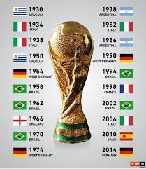

A Copa do Mundo da FIFA é o maior torneio de futebol do planeta. Criada em 1930 pelo francês Jules Rimet, a competição é realizada a cada quatro anos e só foi interrompida em 1942 e 1946 devido à Segunda Guerra Mundial. O Brasil é o maior vencedor, com cinco títulos.
Nos primórdios do século XX, o futebol começou a fazer parte dos Jogos Olímpicos. No entanto, divergências entre a FIFA e o Comitê Olímpico Internacional (COI) levaram à criação de um torneio próprio.
1930 (Uruguai): A primeira Copa do Mundo contou com 13 seleções convidadas. O Uruguai foi o primeiro campeão mundial ao derrotar a Argentina na final.
1934 e 1938 (Itália e França): A Itália dominou a década, tornando-se bicampeã consecutiva.
Após a Segunda Guerra Mundial, a Copa retornou em 1950 no Brasil, marcada pelo "Maracanazo", quando o Uruguai venceu o Brasil no Maracanã.
1958 e 1962: O Brasil brilhou com Pelé e Garrincha, conquistando dois títulos mundiais.
1970 (México): O Brasil venceu a Itália por 4 a 1 e conquistou o tricampeonato, ficando com a Taça Jules Rimet em definitivo.
A Copa do Mundo se tornou um fenômeno global. Em 1982 passou para 24 seleções e em 1998 para 32 seleções.

Seleções como Alemanha, Itália, Argentina e França conquistaram títulos importantes. O Brasil venceu novamente em 1994 e 2002, tornando-se pentacampeão.
O século XXI foi marcado pelo domínio europeu em várias edições da Copa.
2006 - 2018: Itália, Espanha, Alemanha e França foram campeãs em sequência.
2014 (Brasil): A Alemanha venceu o Brasil por 7 a 1 na semifinal.
2022 (Catar): A Argentina de Lionel Messi venceu a França em uma final histórica.